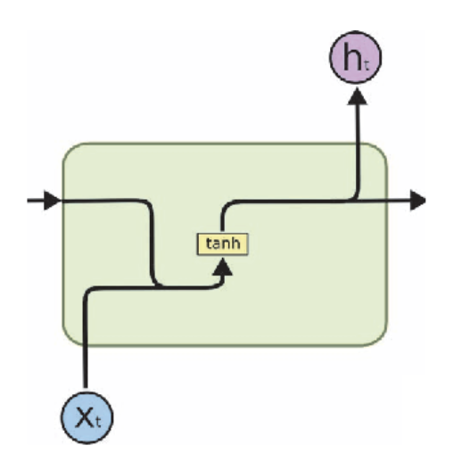
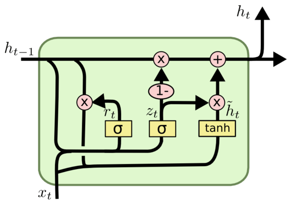
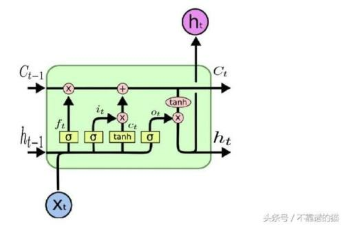

RNN
Table of Contents
1 RNN
1.1 Overview
RNN (Recurrent Neural Network)
问题: 识别负面言论
- I hate you -> negative
- I love you -> positive
如果用机器学习来解决这个问题, feature 和 label 分别是什么?
label
label 很好定义, 我们用 0 表示 negative, 1 表示 positive. 在网络的输出端使用一个 sigmoid 即可.
feature
- 分词
首先, 需要以单词为单位进行分词, 因为单个字母无所谓正面负面.
然后, 要以构造一个 vocabulary, 给每个英文单词赋一个值, 例如:vocabulary = {"I":0, "hate":1, "you": 2, "love": 3, "hello":4, "world": 5,...}
vocabulary 可以通过扫描 wikipedia 或英文字典的方式得到.
- one-hot
然后我们可以对单词的索引使用 one-hot 编码. 假设 vocabulary 大小为 1000,000, 而 one-hot 编码后 feature 中的每个单词都变 成一个大小为 1000,000 的 vector
- then?
feature size 是 [X, 1000,000], X 代表一个样本里有多少个单词. 但与之前的机器问题不同的是, X 大小不是固定的. 对于
I love you, X 为 3, 而对于hello world, X 为 2
上面这个问题实际上称为 sequence model, 它的 feature 不是固定的大小, 而是一个变长的序列, 还有一些问题, 它的输出也是一个变长的序列(例如语言翻译), 通过 RNN, 我们可以解决这类问题
1.2 RNN Cell
RNN 的结构都是类似的, 即序列中的元素依次被同一个 cell 处理, 不同的是, 不同的 cell 内部可以有不同的结构.
RNN (例如 torch 的 LSTM) 与 RNN Cell (例如 torch 的 LSTMCell) 的区别在于: LSTM 会自己去处理输入序列, 而 LSTMCell 需要外部自己通过循环去处理输入序列
1.2.1 Basic RNN

Figure 1: rnn
\(h_t = tanh(W_R(h_{t-1})+W_I(X_t))\)
\(y_t = W_Oh_t\)
1.2.1.1 Basic RNN 难以训练
https://weberna.github.io/blog/2017/11/15/LSTM-Vanishing-Gradients.html
现在只考虑 loss 对 W_h 的梯度:
假设输入为 x0..xt, 输出为 y0..yt, 根据 BPTT (backprop throught time), 总的 error 为
\(E=\sum_{i=0}^{t}{E_i}\), 则 \(\frac{\partial E}{\partial W_h}=\sum_{i=0}^{t}\ldots\frac{\partial h_t}{\partial h_i}\ldots\), 其中 \(\frac{\partial h_t}{\partial h_i}\) 又需要链式求导, 以 \(\frac{\partial h_t}{\partial h_0}\) 为例:
\(\frac{\partial h_t}{\partial h_0}=\frac{\partial h_t}{\partial h_{t-1}}\frac{\partial h_{t-1}}{\partial h_{t-2}}\ldots\frac{\partial h_1}{\partial h_0}=\prod_{k=i}^{t-1}\frac{\partial h_{k+1}}{\partial h_k}\)
其中 \(\frac{\partial h_t}{\partial h_{t-1}}=tanh'W_h\), 由于 \(tanh'\) 上限为 1, 所以 \(\frac{\partial E_t}{W_h}\) 结果类似于 \(\prod_{i=0}^{t}W_h\)
- 当 \(W_h < 1\) 时, 发生梯度消失
- 当 \(W_h > 1\) 时, 发生梯度爆炸
究其原因, 和普通 dnn 中的梯度消失和爆炸问题是一致的: dnn 中的梯度问题的原因是 bp 时中间节点的梯度过大或过小, 对于 rnn 来说, 中间节点的梯度即是 W_h 自身!
实际上, \(h_1\) 传播到 \(h_0\) 还是很容易的 (因为连乘中的 \(W_h\) 只有一项), 但 \(h_t\) 传播到 \(h_0\) 就非常困难了 (连乘中 \(W_h\) 有 t 项), 所以 RNN 无法 `记住` 很长的序列
1.2.2 GRU

1.2.3 LSTM
LSTM 内部比 basic rnn 和 GRU 复杂, 其中除了 H, 还有一个 C 也会在 cell 之间传递, 这个 C 为 cell state, H 为 hidden state

Figure 3: lstm
上图中:
- 粉色的三个 x 是 gate, 从左到右依次为 forget gate, input gate, output gate
- 正常情况下 lstm 的输出是最后一个 h_t, 但也可以输出最后一个 (h_t, c_t) 或者所有的 (h_1, h_2, … ht-1, h_t)
\(f_t=\sigma(W_f[h_{t-1},X_t])\) \(i_t=\sigma(W_i[h_{t-1},X_t])\) \(o_t=\sigma(W_o[h_{t-1},X_t])\) \(c_t=tanh(W_c[h_{t-1},X_t])\) \(C_t=f_t*C_{t-1}+i_t*c_t\) \(h_t=o_ttanh(C_t)\)
1.2.3.1 LSTM 可以解决 RNN 的梯度消失问题
根本原因在于 forget gate
根据 lstm 的公式: \(C_t=f_t*C_{t-1}+i_t*c_t\), 得到 \(\frac{\partial C_t}{\partial C_{t-1}}=f_t+\ldots\), 其中省略的部分会和 rnn 类似, 包含 \(W_c\) 的值, 但是与仅仅包含 \(W_c\) 的 rnn 不同, lstm 可以通过调整 \(f_t\) 的值 (0~1) 避免 \(\frac{\partial C_t}{\partial C_{t-1}}\) 过小, 从而避免梯度消失, 但无法避免梯度爆炸
1.2.3.2 LSTM Profiling
1.2.4 Example
1.2.4.1 tensorflow
import tensorflow as tf # batch size 为 32, 序列长度为 10, 序列中每个数据的长度为 8 # 以 binary adder 问题为例, 假设输入数据是两个四位二进制形式的数, 例如 1010+0101 # 则 inputs shape 为 [batch, 4, 2], 4 表示序列长度为 4, 2 表示两个数相加 inputs = tf.random.normal([32, 10, 8]) # LSTM cell 的 units 为 4, 指 H(和 C) 的大小为4 rnn = tf.keras.layers.RNN(tf.keras.layers.LSTMCell(4)) output = rnn(inputs) # 正常情况下 RNN 的输出是最后一个 cell 的 H, 所以这里的结果是 [32,4] print(output.shape) # return_sequences 表示 rnn 返回 sequence 的大小(各个 cell 的 H 组成的 sequence) # 而不是最后一个 cell 的 H # # return_state 是指返回最后一个 cell 的所有 state, 对于 LSTM 即 C # (final_carry_state) 和 H (final_memory_state) rnn = tf.keras.layers.RNN( tf.keras.layers.LSTMCell(4), return_sequences=True, return_state=True ) whole_seq_output, final_memory_state, final_carry_state = rnn(inputs) print(whole_seq_output.shape) print(final_memory_state.shape) print(final_carry_state.shape)
(32, 4) (32, 10, 4) (32, 4) (32, 4)
1.2.4.2 torch
# input 向量长度为 10, hidden state 长度为 20, 2 层 ltsm cell stack 在一起 rnn = nn.LSTM(10, 20, 2) # batch 为 3, 序列长度为 5, 因为 nn.LSTM 没有指定 batch_first, 所以 first(5) 是 # 序列长度而不是 batch input = torch.randn(5, 3, 10) # h0,c0 的初始状态 (layer, batch, hidden_size) h0 = torch.randn(2, 3, 20) c0 = torch.randn(2, 3, 20) output, (hn, cn) = rnn(input, (h0, c0))